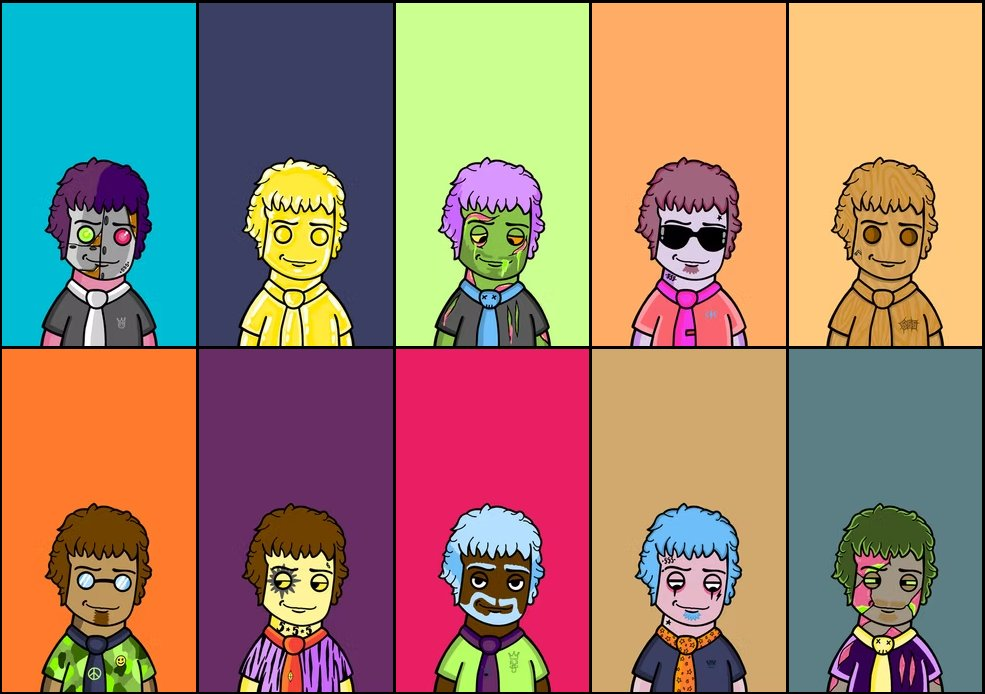
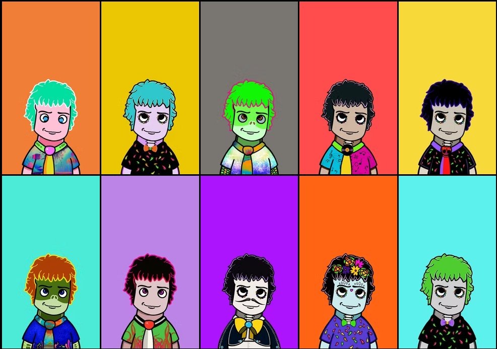
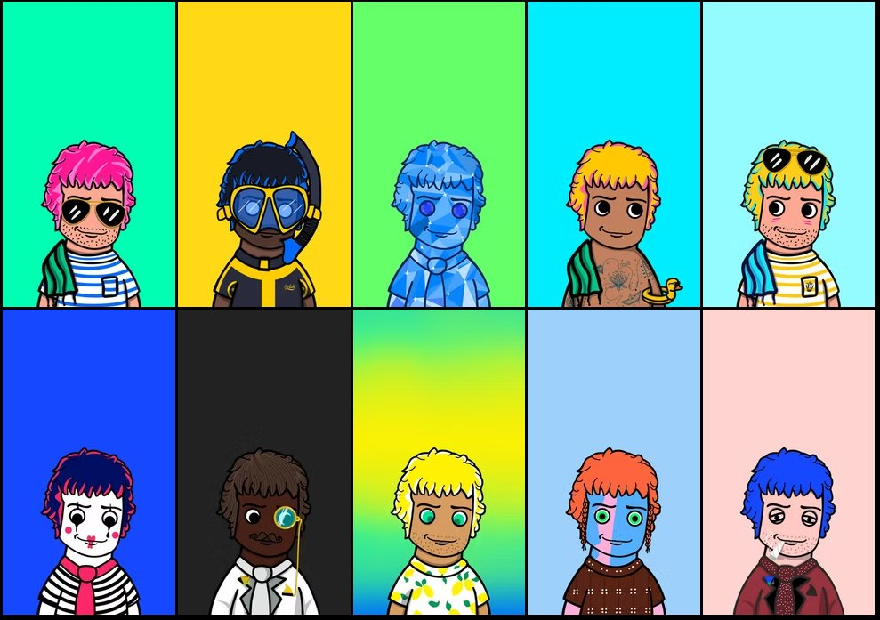

コミュニティからの贈り物
エルネスティートスと他のポートレート · 2020/2023
2020年、世界は閉ざされた。パンデミックは私たちすべてを内へ、恐怖へ、無為の時間へ、スクリーンへと導いた。そしてその不可思議な静寂から、注目すべき何かが形をなした。日本、ロシア、中国、アラブ世界、イラン、ロンドン、カナダ、オーストラリア、ラテンアメリカのアーティストたちがブロックチェーン上で互いに出会ったのだ。共通の地面は地理的でもなければ文化的でもなかった。それは人間的なもので、テクノロジーが許してくれた最も生々しい形だった。
約束は同時に複数の方向に走っていた。希少性を価値の源とすること、ブロックチェーンを永続性の保証とすること、コミュニティをすべての下にあるモーターとすること。私たちは一撃でお金、権力、芸術を分散化したかった。それは雄大で、ある側面では素朴で、別の側面では本物だった。
詐欺があり、ラグプルがあり、膨らんだエゴ、FOMO、ハイプ、摩擦があった。市場は崩壊した。無数のプロジェクトが全世界を約束しながら、何も配信しなかった。
しかし別のこともまた起こっていた。見出しに決して現れないタイプのこと。異常な人々の間で実際に過ごされた時間。朝方まで延びるオーディオスペース。他に誰もしないときに互いの仕事を買っているアーティストたち。美術史、政治、テクノロジー、人生についての会話。別の方法では決して交差することのない人々の間での会話。
その当時、私の英語は限定的だった(今はましだ)。だから私はスペイン語を話すコミュニティの方へ引き寄せられた。キューバ人、メキシコ人、ベネズエラ人、スペイン人、アルゼンチン人。しかし現象はどんな言語やフラッグをも遙かに超えていた。それはグローバルで、誰もがそれを知っていた。ある時点で、マレーシアのアーティストでコレクター、Vissyartsが私の音楽NFTWrath of Gaiaを買った。ジャケットはPixelstarを通じてタイムズスクエアのスクリーン上に映写された。クアラルンプールの誰かが私の作品と繋がるだろうとは想像もしていなかった。それは起こった。なぜならインフラストラクチャが分散化されていたから。仲介者なく、門番なく、許可を求める機関も国境もなく。
すべてが一緒にはいられなかった。OpenSeaは私のウォレットをロックし、プロフィールを消した。私のパスポートがキューバンだったから。コミュニティの他の多くのキューバンアーティストが直面した同じ運命。その大多数は、その制裁が向けられていると主張するシステムに積極的に反対していた。皮肉がこれ以上シャープなことはできないだろう。経済的自由の約束の上に築かれたプラットフォームが、私たちが後ろに残そうとしていたレジームと同じ地理的除外を強制している。規制ロジックは理解できる。制度的支援なしでその規模のプラットフォームを運営することはほぼ不可能だ。そこが妥協が入ってくる場所だ。しかし矛盾は現実で、それは名付けられるに値する。Tezosでの私の作品は無傷のままだ。ブロックチェーンは私を消せない。OpenSeaはできた。そしてそれをした。
そのエコシステムの内部、すべての矛盾、約束、亀裂をもって、何かが起こった。私が求めもしなかったし、組織しもしなかったこと。複数のアーティストが私の肖像を描いた。オープン呼び出しはなかった。それぞれが自分たちの判断で決めた。自分たちのビジュアル言語から、自分たちのインパルスから。写真、紙上の水彩、デジタルコラージュ、イラスト、AI生成画像、表現主義絵画。8つのピース、8つのパースペクティブ、6つの国。
私がここで共有するのは、それらが私についてだからではない。その瞬間についてだ。世界中の好奇心の強い心が、どれほど不完全であろうとも、どれほど一時的であろうとも、市場がどれほど失敗に運命づけられていようとも、一緒に何かを構築することを選んだ時に、何が可能になったかについて。
これらの作品は、そのコミュニティが最高の瞬間に何であり得たかについて、私が持っている最も誠実な記録である。
David Ulloa
ハバナのキッチン
ダビド・ウリョア(David Ulloa)はキューバの東方大学(Universidad de Oriente)の数学教授でありフォトグラファー。現在メキシコで博士号取得中。ハバナを訪れていたある日、彼が私のところへ来た。キッチンでトルティーヤを焼いていた時、彼はカメラを持ち上げた。
その写真は、トルティーヤが空中にある正確な瞬間を捉えている。窓からの逆光。人影はほぼシルエット。片手でフライパン、もう一方の手でフォーク。ポーズはなく、スタジオはなく、記念碑的な意図もない。ある日の、彼のキッチンにいる一人の男。
彼はテゾスで鋳造した時にこう説明した。「もう一度祝う。一人の偉大なアーティストの肖像。友情を祝いましょう。ひげと眼鏡のある大きな心のようなものです。」撮影:1/800, f/2.8, ISO 200, 50mm。黄金比1:1.618で。フィボナッチを意識的に使うフォトグラファーである数学者。
大多数の人がアノニマスなPFPの後ろに身を隠していたエコシステムで、誰かが私のキッチンに入ってきて、それを鋳造した。それもコミュニティだった。
Katiana Maruve
傷から描いた女の子
カティアナ・マルーベ(Katiana Maruve)はハバナの建築家でありビジュアルアーティスト。キューバのNFT開拓者。彼女の作品は女性の身体を対立的でかつ内臓的な視点から探索する。ニューヨークのタイムズスクエア、ハバナの集団展(Beyond the Bodyやclits and titsを含む)で展示している。ハバナの2人のアーティスト、同じNFTコミュニティから、両者ともタイムズスクエアに作品が展示された。私たちの誰もがそれを計画していなかった。
彼女の通常のビジュアル言語は傷だった。エロティックな緊張の中の女性像。剣。血。謝罪なきサドマゾキズム。非常にリアルで暗い場所から描いていた。
2021年12月のある日、彼女は違うことをした。「The Girl and the Mellotron」を制作した。メロトロンに横たわる女性像。赤いリボンで包まれ、雪の結晶が描かれたクリスマスソックス、カラーバウブル。彼女の最も明るい作品の一つ。彼女はそれを私にくれた。
メランコリーはどうにかして現れる。赤いリボンは溶岩のテクスチャを持つ。カティアナは完全に喜びに満ちたものを作ることができなかった。しかし彼女はそれを試みた。そしてその試みが贈り物だ。
彼女はテゾスのkalamint(もう存在しないマーケット)で鋳造した。いつかはNFTエコシステムから遠ざかったが、制作を続けた。今、彼女の作品は成長し続けており、Foundationで見ることができる。
Frank Achon
ノイズからの肖像
フランク・アチョン(Frank Achon)はキューバンデジタルアーティスト。彼の言語は飽和と衝突。新聞の断片、タイポグラフィ、白黒に石灰色がはねかけられたコラージュから構成される。彼の作品は強い政治的エッジを持ち、2021年から2023年までキューバのNFTコミュニティの活動的な部分だった。
私の肖像は、テキストと画像のカオスから、リアルタイムで組み立てられているかのように現れる。眼鏡、ひげ、表現。認識可能だが、ノイズから構成されている。現れるテキスト、「マニャーナ」、技術マニュアルの断片、数字。それはその時点でエコシステム自体の肖像というほぼ何かだ。
アチョンはこのスタイルで3つの肖像しか制作していない。私のもの。クリプトアート・ラテンアメリカ運動の開始者の1人、ゼルダ・ハラのもの。キューバの詩人でアチョンがNFTsに組み込んだグレイのもの。彼は基準を持って被写体を選んだ。今、私はどのネットワークでも彼の検証されたプロフィールを見つけることができない。この物語のもう一つの不在。
Randilandia
炎のピアノ
ランディランディア(Randilandia)はキューバのアーティスト。2022年後半にコミュニティに参加した。
彼女の作品は物理的な肖像ではない。それは表現だ。デジタルスカイから炎のピアノへと逆さまに落ちるピアニスト。浮遊する耳に囲まれ、下から現れる手に支えられている。画像に手書きで: 「私のインスピレーションが来る場所から、正確な座標を持たないところから、ハバナのガレージで炎に包まれたピアノの物語は私の魂に傷を付けた。」
私は「Sombras, Datos y Relámpagos」に現れるハバナのガレージで焼かれたピアノの物語を読んでいた。彼女はそれに画像で応答した。彼女は私を物理的に肖像化しなかった。彼女は私を経験として肖像化した。浮遊する耳が最も正確な細部だ。画像に目はない。耳だけ。なぜなら私の周りの世界は聞いているから。
Buda Studio
ブラジルからの水彩
ブダ・スタジオはレオナルド・M・スカルシア(Leonardo M. Scarcia)。アルゼンチンのアーティスト。ブラジルのガロパバに拠点。キャリアは1994年のブエノスアイレス若手美術ビエンナーレから始まる。レコレータの画廊、アリアンサ・フランセーサ。NFTエコシステムで数十年のデジタル作品の新しい領域を見出した。2021年から2025年にかけてNFT NYC、日本、イタリア、メキシコ、アルゼンチンで展示。
彼は誰も他にしなかったことをした。紙の上の水彩とインク、伝統的な技法を使用し、その後鋳造した。デジタルになる前の手による行為。
彼の肖像は最も親密で、最も真摯だ。顔は半分は光に、半分は影に。目は直接にらみ、他のどのものも持たない強度をもって。お祝いの賛辞ではない。瞑想。
Tuco
AIからの賛辞
トゥコ・ドルック・アルト(Tuco_drcc_art)はアメリカのアーティスト。コロンビアン系。クレイジー・フレンズのメンバー。AIとフォトショップで作業し、多くのコミュニティが疑いを持って見ていた時代に、これらのツールについてオープンに誇りを持っていた。
彼の作品「ザ・ピアニスト」は文字通りの肖像ではなく、原型だ。集中する音楽家の姿。鍵盤上で光る手。まるで光が楽器の内部から来ているかのように。背景は質感とビジュアル歴史の層の蓄積。
彼は書いた。「この作品は感謝を言う私の方法です。心の底から、あなたの寛大さをありがとう友よ。」その時点での彼の最高のAI作品だと付け加えた。彼は彼の最高の創造的瞬間にそれを献身した。それが問題のことだ。
Banshee
クリプト・エルネスト
バンシー(Banshee)はメキシコの若きデジタルアーティスト。同じくクレイジー・フレンズのメンバー。自称nerd。彼女と2人の友達がメタバースを構築した。拡張現実と仮想現実で仕事をした。アート化を行っただけでなく、内部から技術を推し進めた、エコシステム内の人の一人。
彼女の肖像は最も気さくなものだ。赤い眼鏡。口の中にタバコ。ねじ曲がった笑顔。3つの浮遊する眼。ターコイズと紫のグラフィティの背景。彼女の説明に含まれるもの: 「クリプトエコシステムの全ての女の子の愛。」
崇敬ではない。共謀。あなたが愛し、また本当にクールだと見つける人をポートレートする方法。そのためのスペースもコミュニティの中にあった。
Mavi Prado
ベネズエラの爆発
マビ・プラド(Mavi Prado)はベネズエラのアーティスト。バルセロナに拠点。彼女の言語は絶対色彩飽和。コミュニティの複数のアーティストをこのスタイルで肖像化した。
彼女の肖像は私の認識可能な顔、眼、ひげを持つ。色の爆発から現れる。隅にピアノキー。円、心、三角形。すべて最大強度。
ブダ・スタジオとのちょうど対照。同じ年の2つの肖像。一方はほぼ沈黙の水彩。もう一方は絶対の色とビジュアルノイズ。両者は極端な対で何か真実を捉える。それもそのコミュニティがどれほど多様だったかを何かが言う。
この作品は直接に到着した。確認された鋳造なし。それはファイルとして存在し、コレクションの最も一時的なもの。そして逆説的に、最も視覚的に強いものの1つ。
エルネスティートス
2022年後半、コミュニティの3人のアーティストがそのエコシステムで前例のないことをすることに決めた。手作りの、非生成的な、秘密に構成された、一人の人に献身する、コレクションを作ること。
ガストン・ストーンズ(Gastón Stones)はフランスに拠点を置くアルゼンチンのストリートアーティスト。2021年に最初のエルネスティートを簡単な贈り物として作成。その画像は基盤となった。その後、ボカグランディ(Bocagrandi)、メキシコに拠点を置くベネズエラのアーティスト、そしてミナ・パワー(Mina Power)、スペインのデザイナーと話した。3人は数ヶ月間秘密に仕事をした。ガストンのオリジナルから40以上のバージョンをそれぞれ制作。それぞれが同じスタートポイントに自分たちのビジュアルワールドを注入した。
ツイッタースペースの最中のある日、彼らは何か私のためのものを持っていることを私に言った。彼らはコレクションを提示した。約150の手作りピース。すべて私の名前。すべて私が愛する3人のアーティストの時間、才能、愛情で制作。
意図は明確だった。コレクションは、私が望むなら売るための贈り物。補償する義務なし。私は別の方法で決めた。テゾスで一部を鋳造し、彼らのウォレットに転送した。それらの作品は彼らに属するから。たとえ私の名前が付いていても。残りはハードドライブに保存している。それが何かのように。記憶。



約150個の作品から選定された30個
8人のアーティスト。キューバ、アルゼンチン、ブラジル、コロンビア、メキシコ、ベネズエラ、スペイン。誰も彼らを呼ばなかった。それぞれが単独で決めた。
それが最高の瞬間のNFTコミュニティだった。才能を使って感謝を言う人。瞬間を記録する人。前の世界が決して接続しなかったであろう人々の間で何か本物が起こったことの痕跡を残すために。
これらの作品はその記録だ。
Crazy Friends · @CrazyFriends_OG